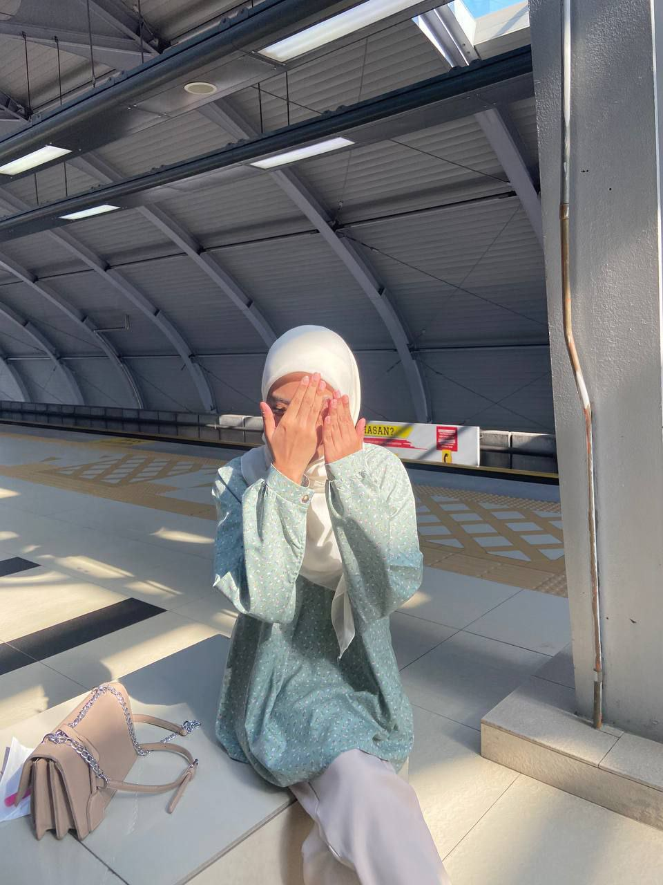

About Me

Today is 19th June 2026. Hello and Assalamualaikum to Dr Seri, my name is Nur Aisyah Khadija Binti Mohd Zaidi and my initial is (NAKBMZ). I was born on 29 December 2005 at Pusat Perubatan Universiti Malaya, Kuala Lumpur. I am the second of two siblings in my family, and I was raised in a supportive and disciplined family that emphasized the importance of education, respect, and responsibility. Growing up, I learned to be independent and adaptable, as I often had to manage my time between school, family responsibilities, and personal interests. I have always been a curious and eager learner, and I enjoy gaining new knowledge and experiences that can help me improve myself. These values and experiences have played an important role in shaping my personality and guiding my decisions throughout my life. See more
Education
| Pusat Pengajian | Description |
|---|---|

|
I was educated at Sekolah Kebangsaan Seksyen 24 for a year before my family moved to a new location to begin the next phase of life. Visit Facebook |

|
Sekolah Kebangsaan Seksyen 16 was where I gained knowledge from the age of 8 to 12, forming my academic foundation and personal development throughout my primary school years. Visit Facebook |

|
I attended school here from the ages of 13 to 17, developing academic potential, personal skills, and experiences that helped shape who I am today. Visit Facebook |

|
At UiTM Rembau, I am pursuing a Diploma which helps strengthen my knowledge base and prepares me for future academic and career challenges. Visit Website |
Experience

During the 4th semester break, I underwent two months of industrial training to complete my diploma. The experience I gained was very valuable and can be used in the future. See more